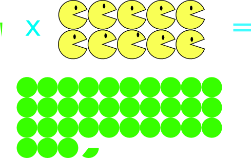
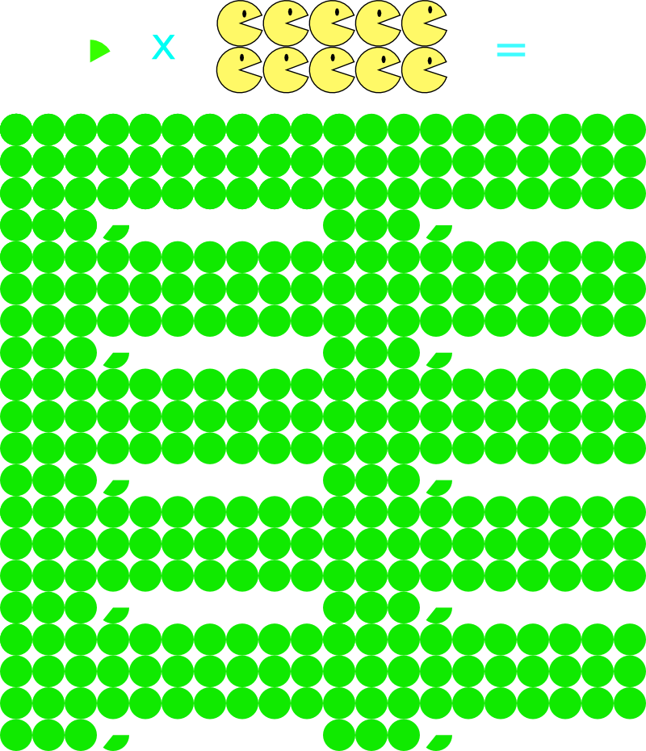

Ljusår
Skäggsekunder
Teamminuter
Daniel Brolund, Agical
?!?
Teamminuter
10 personer * 1 minut/dag

33+ mantimmar/år
10 personer * 10 minuter/dag

2 manmånader/år (!!!)
Några kamerala slutsatser...

Bilder
- http://www.geekalerts.com/buzz-lightyear-costume/
- http://www.3dscience.com/
- http://www.facebook.com/fromquarkstoquasars
- http://commons.wikimedia.org/wiki/File:Globen_jul-07_008._22ljus.jpg
- http://en.wikipedia.org/wiki/File:TOPIO_3.0.jpg
- http://en.wikipedia.org/wiki/File:Tianhe1a.jpg
- http://xkcd.com/1205/
- http://commons.wikimedia.org/wiki/File:
Summer_Solstice_Sunrise_over_Stonehenge_2005.jpg -